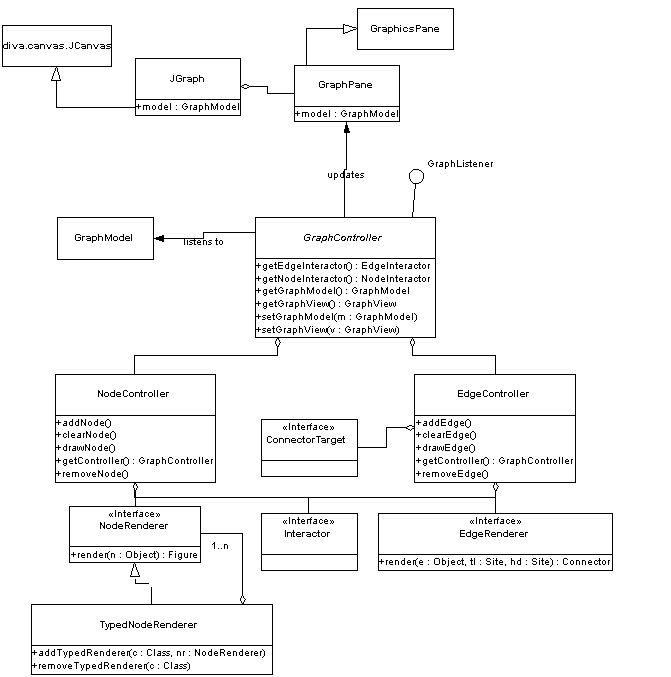

diva.graph is the high-level facade of the graph package and responsible for the display of graphs. It contains the graph display widget, JGraph, and a bunch of other user interface components, including visual representations of nodes and edges, and some default node/edge behaviors. This package is strongly dependent on the Diva canvas, but the rest of the graph package is not dependent on this package, so alternative implementations should be easy to write. If your application has no special graph data structure or layout requirements, you should be able to use this package without knowing much at all about the other packages. In fact, if your application has no special display requirements, you should be able to use the whole thing without knowing much about this package either!
|
 |
JGraph is the centerpiece of the graph package, a customizable Swing widget which allows users to view and interact with graphs. By constructing the widget and placing it in a window, the user can place nodes in the graph, draw edges between the nodes, move the nodes and disconnect/delete the edges. All of this is captured by the following snippet of code:
JFrame f = new JFrame();
f.getContentPane().add("Center", new JGraph());
f.setSize(800, 600);
f.setVisible(true);
The graph pane ultimately is responsible for the display of the graph. However, the display smarts and customization facilities are located elsewhere. GraphPane is simply a diva.canvas.GraphicsPane with a few graph-specific methods for setting up the relation with the GraphView and GraphController classes, described below. It contains Diva canvas figures, which happen to represent graph entities, but it doesn't understand the graph semantics per se.
All of the customization of the graph display and editing behavior is done within GraphView and GraphController.
GraphView is a class which holds node and edge renderers to produce a visual representation of the nodes and edges in the graph, and an incremental layout engine which it uses to place newly-added nodes and route newly-added edges. There are several classes which make it easier to write renderers, most notably TypedNode/EdgeRenderer, which allows users to register specific renderers based on the type of the user data in the respective node/edge that is being rendered.
GraphController is the point of extensibility for editing behavior. It is an interface, so it can be rewritten from scratch. It is responsible for listening to changes in the graph and responding by asking the view to render and layout the resulting figures. The GraphController is responsible both for implementing a policy for dealing with inconsistencies in the graph and for annotating the rendered node and edge figures with appropriate user interaction behavior.